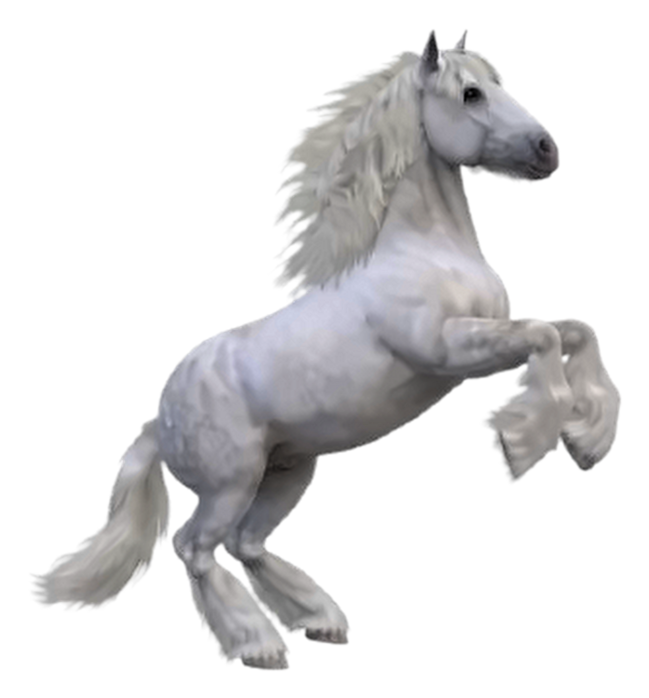

Una brujita, c’est une petite sorcière en espagnol, mais dans certaines cultures d’Amérique latine, elle peut évoquer une féminité indépendante, mystérieuse ou un peu rebelle. Je pense que ça me définit plutôt bien.
Au fond de moi, je reste encore une petite fille qui se laisse porter dans son propre univers. Et cet univers, je l’alimente chaque jour grâce à mes souvenirs, à mes réussites et à mes échecs.
Aujourd’hui, je ne suis plus haute comme trois pommes, mais je rêve toujours aussi grand. Je rêve de voyager, de continuer à créer, à imaginer et surtout à explorer. J’ai encore parfois du mal à m’ouvrir au monde, à me dévoiler, mais ici, j’essaie de partager un morceau de mon univers, un petit peu de moi.
Petite, on m’a inscrite au solfège. Après quelques années, il a fallu choisir un instrument, alors j’ai choisi le saxophone. Il était beaucoup trop grand pour moi : il m’arrivait en dessous du genou. On m’avait proposé d’en changer pour un instrument plus petit, mais je ne voulais pas. J’avais fait mon choix, et c’était le saxophone que je voulais.
Aujourd’hui, j’ai délaissé le saxophone pour les platines, mais la musique me transporte toujours autant. Ce qui me fascine, c’est la palette d’émotions que l’on peut transmettre et ressentir à travers elle. C’est aussi cette façon qu’a une chanson de s’associer à un moment bien particulier, jusqu’à en devenir indissociable.
Cet art m’a accompagnée dans bien des moments de la vie, les plus heureux comme les plus difficiles, et il continuera de m’accompagner chaque jour. La musique m’a appris à entendre, mais surtout à écouter.
all the countries i've been on the globe